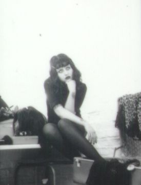

Tu restes là, rue de l'ange, cette petite rue étroite de ta ville, à regarder les gens passer. Les parfums de la boutique religieuse enivrent tes sens. L'encens d'oliban te transporte et la vue des bougies multicolores classées par couleur a un effet apaisant sur ton système nerveux.
Tu es rarement seule. Tes parents sont souvent avec toi, ou tes copines, ou tes camarades.

Tu as une dizaine de minutes devant toi, alors tu veux savourer ce moment seule. Sentir la rue. Sentir le vent. Admirer les nuances versatiles du ciel en ce milieu d'après-midi d'octobre. La rue de l'ange sent un mélange d'encens et de barbe à papa. Plus loin dans la rue, il y a un petit bureau de tabac, et tu adores l'odeur des bonbons qui en émane. Tu es là, à pérambuler dans cette ville que tu as toujours connue, connais par cœur et au final ne connais pas, car tu n'y as jamais été sans compagnie. Seul l'affranchissement de tous les dogmes familiaux te permettra de connaître les lieux et les êtres avec une liberté incommensurable. Alors certes, dix minutes c'est peu pour embrasser cette liberté incommensurable mais c'est un début. Quand tu erres seule comme ça dans les rues, tu as l'impression qu'à chaque détour, à chaque coin de rue, une nouvelle aventure t'attend. Si tu ne choisis jamais vraiment, alors le monde peut être à toi. Toutes les voies demeurent encore possibles.
Tu t'es trop longtemps cristallisée sur des relations qui ont viré au confort. Tu as peur de tout. De répondre au téléphone, de parler à voix haute en classe. De donner ton avis à ta meilleure amie. Avant quand tu étais enfant, tu n'avais pas de filtres. Tu fonçais dans le tas. Tu aimerais retrouver la simplicité et la joie de ton toi d'avant. Maintenant tu n'as plus une seule meilleure amie. Tu en as trois. Pour trois raisons bien distinctes. Tout d'abord il y a Soline. Soline tu la connais depuis tes 3 ans. Elle a toujours été là pour toi et vice-versa. Elle rayonne d'une beauté surréelle et d'une discrétion sans pareille. Ce qui la rend encore plus douce et intrigante. Elle partage ton sens de la folie créative, elle te suit dans tes délires fantasmagoriques. Mais aujourd'hui, elle s'émancipe du joug de l'enfance et de l'innocence qu'on lui corrèle. Elle a des amants, et tu trouves ça à la fois chic et incompréhensible. Tu saisis qu'elle ait du succès, mais tu ne sais pas comment ça marche et ça reste un insondable mystère pour toi.
Puis il y a Aude. Aude a fusionné avec Soline en l'espace d'un an, donc tu as dû apprendre à te libérer de tes visions passéistes, du confort d'une amitié exclusive. Aude est une jeune femme vive d'esprit, intelligente et qui ne manque jamais de formules lapidaires et sarcastiques qui l'érigent au rang de personne très désirable au lycée. A cela vous pouvez y greffer un corps callipyge et une aura puissante. Tu te demandes parfois si Soline reste encore avec toi par fidélité au passé ou si elle éprouve encore un quelconque intérêt pour toi. Elle est toujours adorable, mais tu doutes constamment des motivations d'autrui. Tu as longtemps été l'objet de harcèlements et de moqueries quotidiennes. Ta boussole relationnelle est toute pétée, voire au mieux totalement déréglée. Heureusement, cette année, tu sens que le harcèlement s'estompe enfin. C'est peut-être aussi lié au fait que depuis quelques mois tu traînes sous les piliers dans la cour du lycée... QG de tous les gothiques de l'établissement. Certes tu aimes t'habiller en noir mais tu le montres moins qu'Emma, ton autre meilleure amie un peu sorcière. Elle n'a peur de rien et tu l'admires pour ça. Rouge à lèvres noir, cheveux de jais, griffes assorties, résilles et dentelles noires. Tu aimerais arborer ce look, mais tu te sens trop freinée par ton éducation. Audacieuse, cinglante et affectueuse, Emma a conservé une candeur enfantine doublée d'une lucidité d'adulte. C'est un peu ton imago psychique et stylistique. Mais tu n'oses assumer ton côté gothique jusqu'au bout des ongles. Pourtant, la poésie romantique et la littérature gothique sont tes mouvements littéraires préférés. Le samedi soir, tu fantasmes en regardant la série The Crow avec Marc Dacascos. Tu aimerais être sa fiancée, Shelly, même si c'est un fantôme les 99% de la série (elle meurt les 10 premières minutes du premier épisode). L'amitié d'Emma te donne confiance en toi, te permet d'oser à moindre mesure ce qu'elle ose au quotidien. C'est déjà énorme pour toi. Alors quand elle arrive 1 minute avant les filles à votre point de rendez-vous et te propose une aventure un peu magique un peu occulte, tu ne réfléchis pas, tu lui dis oui. Aude et Soline débarquent à leur tour et sont tellement absorbées par leur conversation qu'elles vous suivent sans sourciller.
Tu suis Emma comme Alice suit le lapin blanc : tourne donc à la page 33.